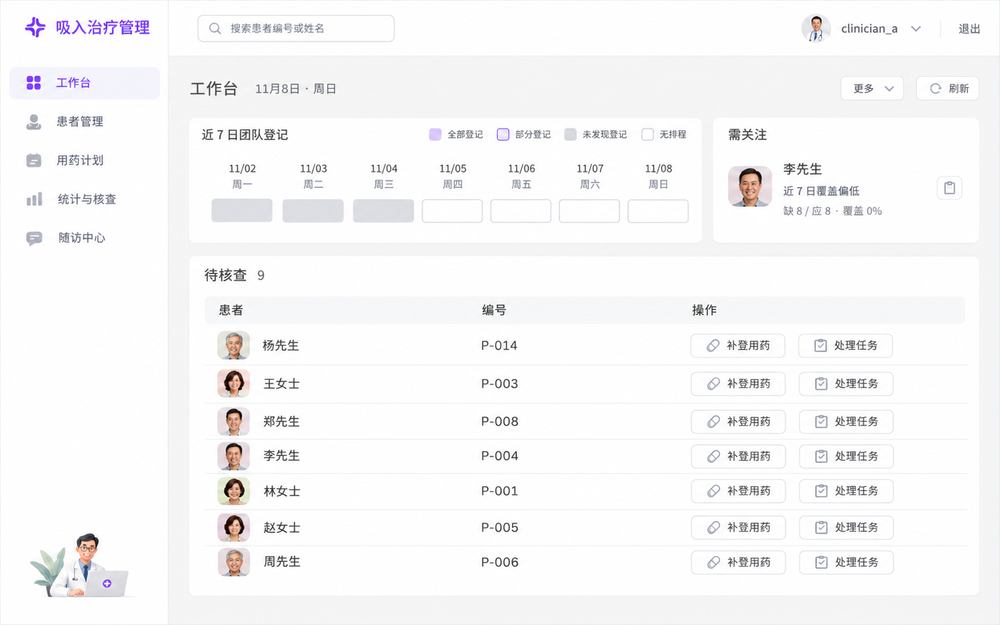
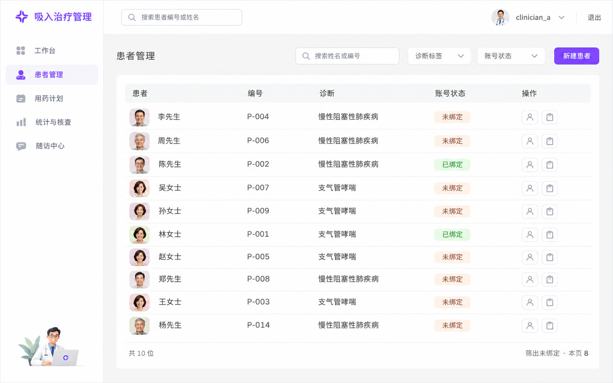
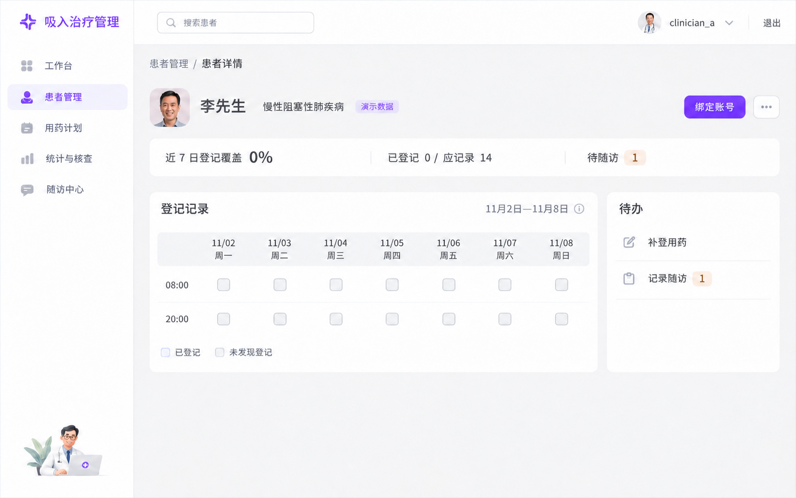
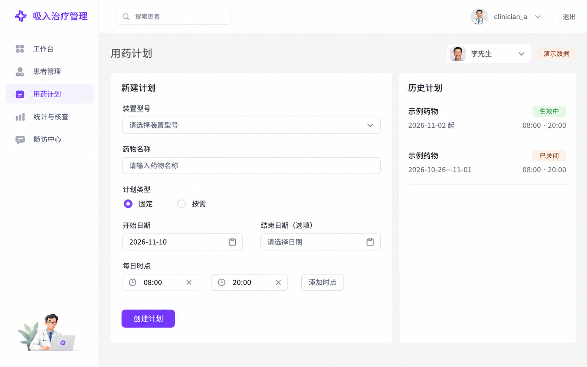
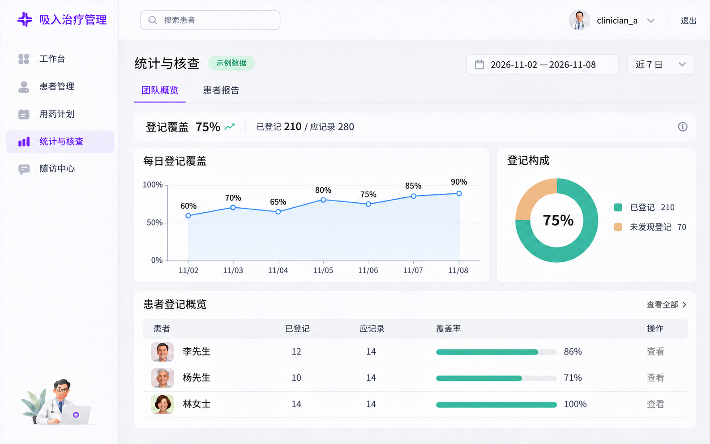
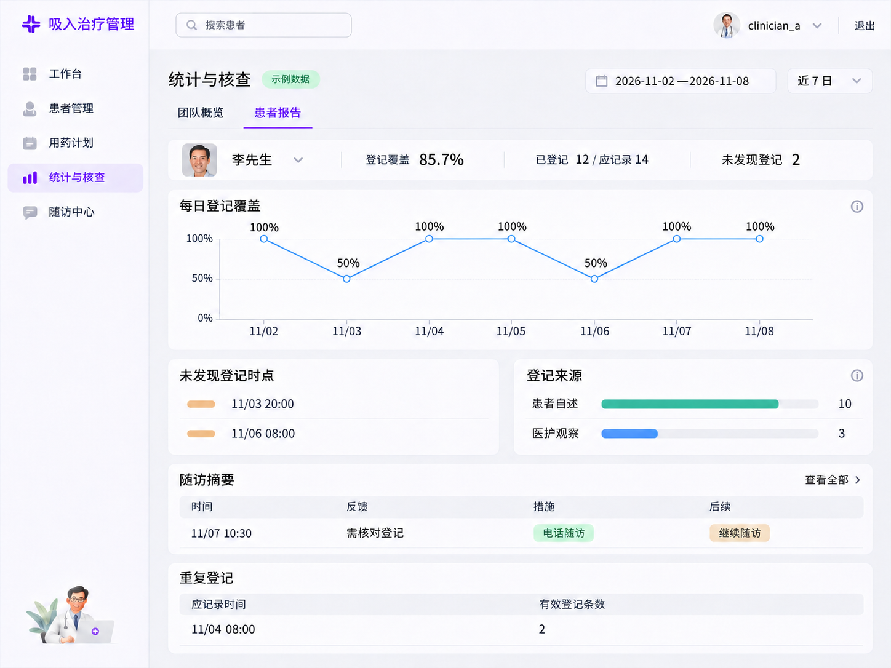
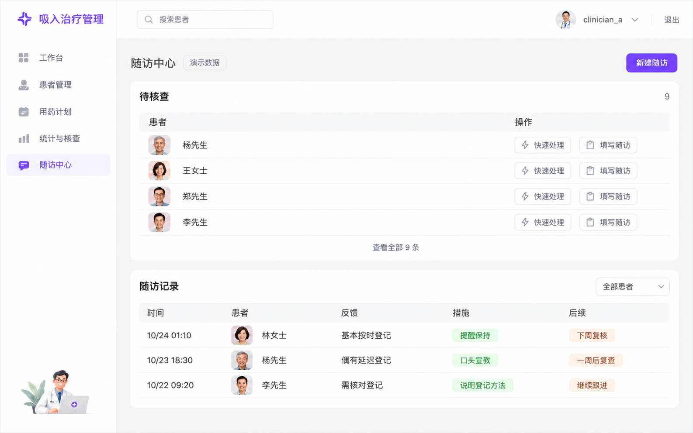

认证
医护端

查看原图02 · 工作台approved-batch-01：近 7 日登记、需关注、待核查队列

查看原图03 · 患者管理approved-batch-01：工具栏加患者表，状态胶囊

查看原图04 · 患者详情handoff-final-v2 冻结稿（实现画廊里的 04 仍是 Comfort，对照时注意）

查看原图05 · 用药计划approved-batch-02：左新建、右历史版本

查看原图06 · 统计与核查 · 团队概览approved-charts-v2（06-stats-charts），不是更早的 06-stats

查看原图07 · 患者报告handoff-07-v1 独立布局：身份摘要、趋势、未登记、来源、随访、重复登记

查看原图08 · 随访中心approved-batch-02：待核查与随访记录